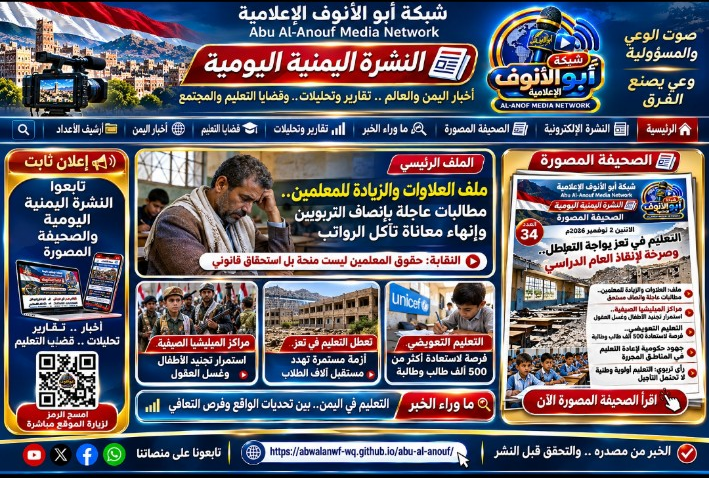
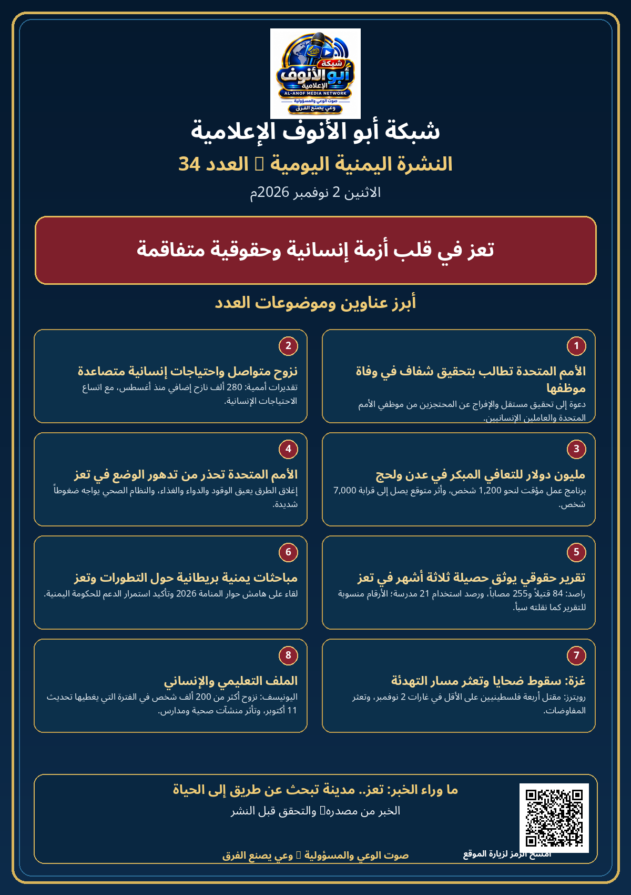

بوستر الصحيفة المصوّرة — العدد 34
الصورة المصوّرة وعناوينها المطابقة لها



عناوين الصحيفة المصوّرة
- 1الأمم المتحدة تطالب بتحقيق شفاف في وفاة موظفها
- 2نزوح متواصل واحتياجات إنسانية متصاعدة
- 3مليون دولار للتعافي المبكر في عدن ولحج
- 4الأمم المتحدة تحذر من تدهور الوضع في تعز
- 5تقرير حقوقي يوثق حصيلة ثلاثة أشهر في تعز
- 6مباحثات يمنية بريطانية حول التطورات وتعز
- 7غزة: سقوط ضحايا وتعثر مسار التهدئة
- 8الملف التعليمي والإنساني
العناوين المعروضة هنا تخص الصحيفة المصوّرة للعدد 34 فقط. أما مواد النشرة الإلكترونية فتظل في مفتاحها المستقل.